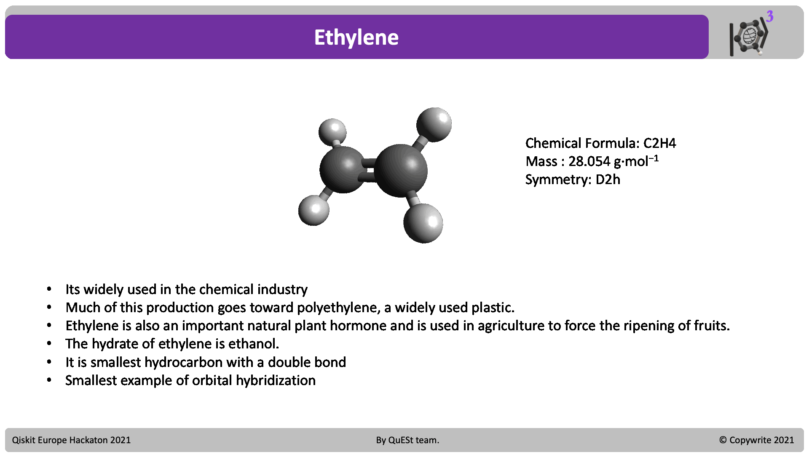
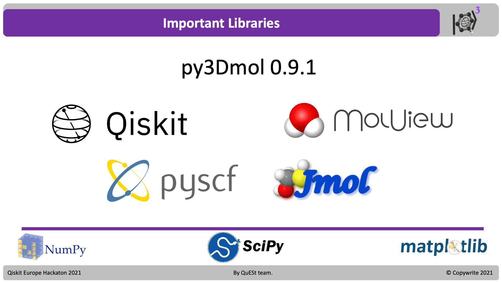
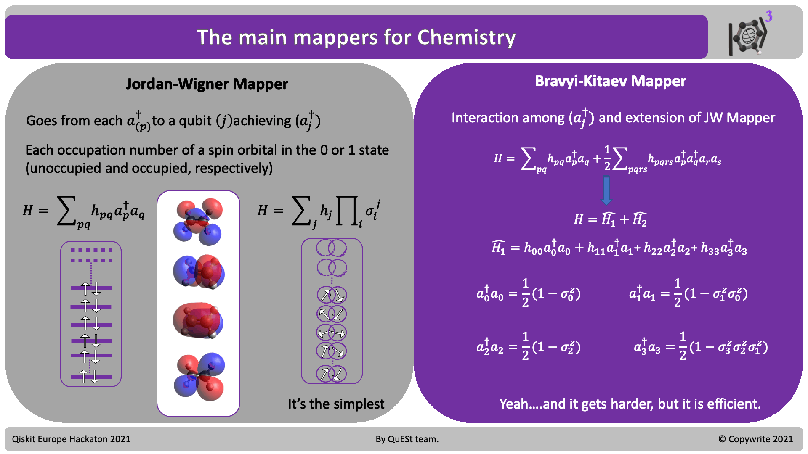
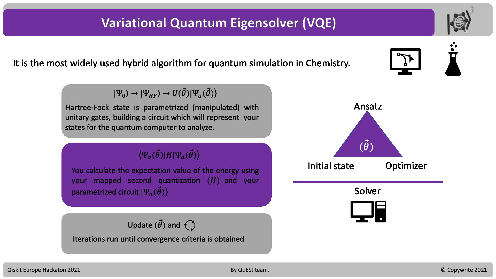
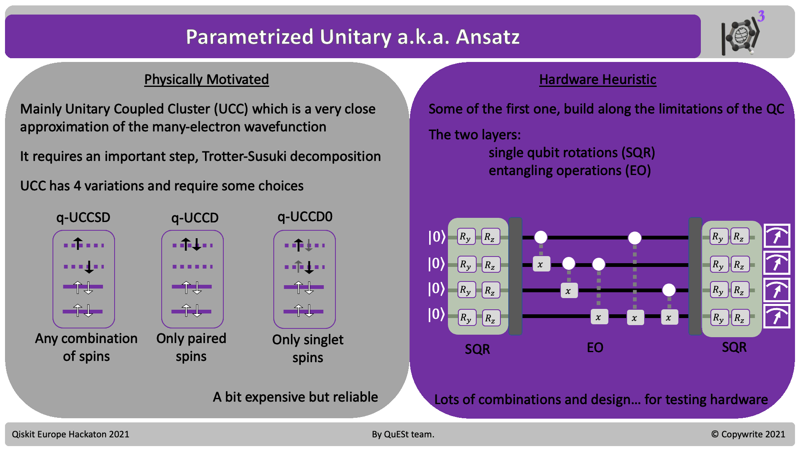

Ethene Molecule
¶

The following notebook aims to explain the process of calculating slight bigger molecular systems using the Active Space Transformer Function.
This initiates the process of Embedding which will allow us to compute energies of certain electrons and molecular orbitals (MO’s) in a quantum computer, leaving the rest of the MO’s to be calcualted classically.
The following notebook is divided in:
Libraries and certain considerations
Defintion of the molecule using PySCF
Defining the Hartree-Fock problem “Classically”
Analyze the Molecular Orbitals for Active Space
Embedding and Electronic Structure problem
The Quantum-Active Space
Defining the Hartree-Fock problem “Quantum”
Mapping your problem to Qubits
The Variational Quantum Eigensolver (VQE)
Initialize your Quantu-Hartree Fock State
Physical and Heuristic Ansatz
Optimizers
Solving the Groundstate
Classical Eigensolver (Numpy)
Local-VQE (Qiskit-Nature)
IBMQ-Backends (IBMQ Experience)
View Results
What to compare
What to look for
Libraries¶

Needless to say, the installation of Qiskit, Qiskit-Nature, PySCF, py3Dmol are important for the full functionally of this notebook as well as common python science libraries.
import sys
import time
from pyscf import gto, scf, mcscf, mp, cc, dft, ao2mo, lo, fci
from pyscf.tools import molden, cubegen
from pyscf.geomopt.geometric_solver import optimize
import numpy as np
from qiskit_nature.drivers import PySCFDriver, UnitsType, Molecule, HFMethodType
from qiskit_nature.problems.second_quantization.electronic import ElectronicStructureProblem
from qiskit_nature.converters.second_quantization import QubitConverter
from qiskit_nature.mappers.second_quantization import ParityMapper
from qiskit_nature.transformers import ActiveSpaceTransformer, FreezeCoreTransformer
from qiskit.algorithms import NumPyMinimumEigensolver
from qiskit_nature.algorithms.ground_state_solvers import GroundStateEigensolver
#import basis_set_exchange
# qiskit
from qiskit.utils import QuantumInstance
from qiskit import Aer
from qiskit.algorithms.minimum_eigen_solvers import NumPyMinimumEigensolver, VQE
from qiskit.algorithms.optimizers import SLSQP
from qiskit.circuit.library import ExcitationPreserving
from qiskit import BasicAer
from qiskit.algorithms import NumPyMinimumEigensolver, VQE
from qiskit.algorithms.optimizers import SLSQP
# qiskit nature imports
from qiskit_nature.problems.second_quantization import ElectronicStructureProblem
from qiskit_nature.converters.second_quantization import QubitConverter
from qiskit_nature.mappers.second_quantization import JordanWignerMapper
from qiskit_nature.algorithms import GroundStateEigensolver
from qiskit_nature.drivers import PySCFDriver, UnitsType, Molecule
from qiskit_nature.algorithms.pes_samplers import BOPESSampler, Extrapolator
Defining a PySCF molecule¶

You can design your structure online or upload any coordinates of your structure.
The allowed format for PySCF molecules come in the XYZ for Mol format.
In PySCF you can define very important features of your classical calculation:
symmetry –> Set to True
spin
charge
unit (set to Angstroms)
name of output
basis set –> Very important!
#Function to define a molecule with the GTO class
def my_pyscf_mol(xyz ,symmetry, spin, charge, units, basis, output):
my_molecule = gto.Mole()
my_molecule.fromfile(str(xyz))
my_molecule.symmetry = symmetry
my_molecule.spin = spin
my_molecule.charge = charge
my_molecule.unit = units
my_moleculeverbose = 1
my_molecule.basis = basis
my_molecule.output = output
my_molecule.build()
return my_molecule
#Read HF Optimized structures
opt_sto3g = my_pyscf_mol(xyz="Ethene_Monomer.xyz",
symmetry=True,
spin=0,
charge=0,
units='A',
output='opt_sto3g.out',
basis='sto3g')
overwrite output file: opt_sto3g.out
Now we calculate the meand field.
We decide to calculate a Restrictired Shell Hartree-Fock simulation
#STO-3G Basis set
mf_opt_sto3g = scf.RHF(opt_sto3g)
mf_opt_sto3g.kernel()
-77.07229614334861
Understand the HF problem Classically¶
Lets generate the MO diagram of the problem of interest
Plenty of basis sets are available in PySCF in here
With STO-3G you get 14 Orbitals for C2H4, 8 Occupied and 6 Unoccupied
This part is important to understand for the Active Space formulation
The results are vizualized in the plot you’ll se below.
import numpy as np
import matplotlib.pyplot as plt
from matplotlib.lines import Line2D
#Energies and occupation
Energies = mf_opt_sto3g.mo_energy # Energies
Occupation = mf_opt_sto3g.mo_occ/2 # Number of occupied orbitals
Orbital_number = int(len(Occupation)) # Number of orbitals within the basis set used
x = np.zeros(len(Energies))
#Get to arrays with occupied and unoccupied MO
counter=np.sum(Occupation)
occ_mo = Energies[0:int(counter)]
x_occ = np.zeros(len(occ_mo))
unocc_mo = Energies[int(counter):len(Energies)]
x_unocc = np.zeros(len(unocc_mo))
mo_numbers = np.arange(len(Energies)) + 1
x_new = np.zeros(len(Energies))
i = 0
while i < len(Energies)-1:
temp = Energies[i]-Energies[i+1]
temp = np.abs(temp)
if temp > 0.2:
x_new[i] = 0
i = i + 1
elif temp < 0.2:
x_new[i] = -0.04
x_new[i+1] = 0.04
i = i+2
x_occ = x_new[0:int(counter)]
x_unocc = x_new[int(counter):len(Energies)]
#Plotting occupied and unoccupied in red and blue
plt.figure(figsize=(6,8))
plt.scatter(x_occ, occ_mo, c='dodgerblue', s=1444, marker="_", linewidth=2, zorder=3)
plt.scatter(x_unocc, unocc_mo, c='crimson', s=1444, marker="_", linewidth=2, zorder=3)
#Define limits
low_lim = int(counter)-2 # HOMO-2
top_lim = int(counter)+2 # LUMO+2
if top_lim > Orbital_number:
top_lim = Orbital_number
if low_lim < 0:
low_lim = 0
#Put the index of a range HOMO-2 and LUMO+2 (This can be an option)
for i in np.arange(low_lim,top_lim+1):
index =int(i-1)
text = str(i)
plt.annotate(text, xy=(x_new[index],Energies[index]),xytext=(x_new[index]-0.015,Energies[index]) ,xycoords='data' )
plt.ylabel('Energy [a.u]',fontsize=12)
plt.xlabel('MO',fontsize=15)
legend_elements = [Line2D([0], [0], color='dodgerblue',lw=3.5, label='Occu.'), Line2D([0], [0], color='crimson',lw=3.5, label='Unoccup'),]
plt.legend(handles=legend_elements,loc='upper right', fontsize=12 ,prop={'size': 10} , ncol=1, fancybox=True)
#Put the limits in y- HOMO-3 and LUMO+4 (This can be an option)
plt.ylim(Energies[low_lim-1],Energies[top_lim-1]+0.1)
plt.xlim(-0.1,0.1)
plt.xticks([])
([], [])
Visualization of the Molecular Orbitals¶
For clarity and to follow a more pictographic path, we take a look at each of the MOs.
Especially if they are close to the Fermi level.
That is, around MO’s 7, 8, 9, 10.
For your comfort and curiosity, you can visualize the isosurface of the MOs wavefunctions.
#Function to read XYZ files
def readXYZ(file):
f = open(file, "r")
lines = f.readlines()
filelength = len(lines)
progress = 0
geomcount = 0
geom = []
while progress < filelength:
tmpgeom = ""
length = int(lines[progress])+2
rangestart = progress
rangeend = progress + length
for i in range(rangestart, rangeend):
tmpgeom = tmpgeom + lines[i]
geom = geom + [tmpgeom]
geomcount = geomcount + 1
progress = progress + length
f.close()
return(''.join((geom)))
#Interactive selection of the functional of Interest
from __future__ import print_function
import py3Dmol
from ipywidgets import interact, interactive, fixed, interact_manual
import ipywidgets as widgets
def f(x):
index_i = int(x)-1
cubegen.orbital(opt_sto3g, 'temp.cube', mf_opt_sto3g.mo_coeff[:,index_i])
orbital_mol = open("temp.cube", "r").read()
v = py3Dmol.view()
v.addVolumetricData(orbital_mol, "cube", {'isoval': -0.02, 'color': "red", 'opacity': 0.75})
v.addVolumetricData(orbital_mol, "cube", {'isoval': 0.02, 'color': "blue", 'opacity': 0.75})
geom = readXYZ("Ethene_Monomer.xyz")
v.setStyle({'stick':{}})
v.zoomTo()
v.addModel(geom,"xyz")
v.setStyle({'stick':{}})
v.show()
#You can remove the comment to the different orbitals
interact(f, x=mo_numbers);
Hartree-Fock Embedding¶
A recent publication of a method shows how to simulate bigger molecules with a strong degree of accuracy¶
It goes like this:
Definition of Inactive and Active space
We derive the so-called inactive Fock operator. The goal of this operator is to embed the quantum computation into a classically computed environment treated at the HF level of theory, through the notion of an AS.
The total electronic energy, \(E\), is defined by the expectation value of the system Hamiltonian, \(\hat{H} \) $\(E = ⟨Ψ∣H∣Ψ⟩ = \sum_{pq} h_{pq}D_{pq} + \frac{1}{2} \sum_{pqrs} g_{pqrs}d_{pqrs}\)\(, where \)Ψ\( is the wavefunction, \)h_{pq}\( and \)g_{pqrs}$ are the one- and two- electron integrals, respectively, and D and d are the one- and two- particle density matrices.
\(h_{pq}\rightarrow\) One electron Integral
\(g_{pqrs}\rightarrow\) Two electron Intagral
To achieve the implementation of the HF embedding, we split the one-electron density (D) into an active and inactive part, \(D = D^A+D^I\)
In the MO basis, the latter simplifies to \(D_{iq} = 2δ_{iq}\), where we
use Helgaker’s index notation in which i, j, k, l denote inactive, u, v, x, y denote active, and p, q, r, s denote general MOs.
Inactive |
Active |
MO |
|---|---|---|
i |
u |
p |
j |
v |
q |
k |
x |
r |
l |
y |
s |
The one electron contribution is: $\( \sum_{pq} h_{pq}D_{pq} = \sum_{vq}h_{vq}D_{vq}^A + \sum_{jq}h_{jq}D_{jq}^I \)\( we use the fact that a density matrix element vanishes when any of its indices correspond to a virtual orbital to obtain: \)\( \sum_{pq} h_{pq}D_{pq} = \sum_{uv}h_{uv}D_{uv}^A + 2 \sum_{jq}h_{jj} \)$
and the two electorn contribution is: $\( \frac{1}{2} \sum_{pqrs}g_{pqrs}d_{pqrs} =\frac{1}{2} \sum_{pqjs}g_{pqjs}d_{pqjs} + \frac{1}{2} \sum_{jqus}g_{jqus}d_{jqus} + \frac{1}{2} \sum_{vqus}g_{vqus}d_{vqus} \)$
one important point is how to represent the two electron density matrices using one electron density matrices.
Express the two-electron density matrices in terms of one-electron ones:
$\(d_{pqjs} = (2\rho_{js}- \rho_{qj} \rho_{sq})D_{pq}\)\(
\)\(d_{jqus} = (2\rho_{qj} \rho_{sq}- \rho_{sj})D_{uq}\)$
The Inactive Fock Operator is then:
and its energy is:
as such, we redifine our total energy as:
and at last our hamiltonian is then:
This \(\hat{H}\) will go into the quantum computer now.
Qiskit Nature and PySCF driver¶
This step is the link between the classical computation in PySCF and the quantum computing process taken over by IBMQ.
The class Molecule defines QMolecule which is Qiskit definition of the molecule.
The driver PySCFDriver translates the information of the Qmolecule object from the PySCF library.
The hf_method parameter defines the if the restricted (RHF), unrestircted (UHF) or restricted-open (ROHF) configurations are used
Finally, by running the driver we form the new Qmolecule object for Qiskit Nature.
from qiskit_nature.drivers import PySCFDriver, UnitsType, Molecule , HFMethodType
#using the class Molecule (From Qiskit Nature) we can make an object for PySCFDriver
#opt_sto3g is the GTO objectr from PySCF , in this case the optimized structure
molecule = Molecule(geometry= opt_sto3g.atom ,charge=0, multiplicity=1)
#We call the PySCFDriver and we provided our define molecule object (molecule)
#Within the driver we define the units (ANGSTROM), basis using the GTO PySCF driver and hf_method RHF UHF or ROHF
driver = PySCFDriver(molecule=molecule, unit=UnitsType.ANGSTROM, basis=opt_sto3g.basis, hf_method=HFMethodType.RHF)
# #Running PySCF it prints convergence True or False (Important), Total Energy , Electronic dipole and Total dipole
#run PySCF with the use of the PySCFDriver and what we will know as quantum molecule
q_molecule = driver.run()
Quantum-Active-Space¶

By calling the function ActiveSpaceTransformer you can customize your quantum active space.
num_electrons= (n)The number of active electrons. If this is a tuple, it represents the number of alpha and beta electrons.
num_molecular_orbitals(n)The number of active orbitals
active_orbitals=[int,int,int,int]A list of indices specifying the molecular orbitals of the active space
C2H4 with the STO-3G basis set has 14 MO orbitals, where 8 are occupied.
In this example we want to use 4 occupied electrons and 4 orbitals to simulate.
#Based on the number of MO within the basis define the occupied and unoccupied virtuals
#ActiveSpaceTransformer will be use to selected the active space from the q_molecule MO representation
#You can define as (2,3) (#electrons, #orbitals)
#The selection of the MO is around the HOMO
active_space_trafo = ActiveSpaceTransformer(num_electrons=4,num_molecular_orbitals=4, active_orbitals=None)
#Another option is to specificalle define the index of the MO orbitals
#active_space_trafo_2_3 = ActiveSpaceTransformer(num_electrons=2,num_molecular_orbitals=3,active_orbitals=[4,5,6])
#Example (4,4) , Active Space HOMO-1, HOMO, LUMO and LUMO+1 (4,5,6,7 from the MO Energy diagram displayed above)
#active_space_trafo_4_4 = ActiveSpaceTransformer(num_electrons=2,num_molecular_orbitals=4)
Mapping the second quantization problem¶
The translation of the recently computed hamiltonian into the qubit formalism is called Mapping.
This part is where things get quantum quantum, not classically quantum, if you know what I mean.

by the way, these AMAZING animations of gates are a masterpiece of Casey Duckering
Here is an important step in your calculation.
You can customize your electronic structure probem and its paramenters like Quantum Active space.
Using ElectronicStructureProblem you need to call your driver which if you remember, has the information of your entire molecule and its characteristics from PySCF into Qiskit.
q_molecule_transformers is a list where you pass the fucntion ActiveSpaceTransformer
Important If you pass only the driver without the Quantum Active space you will require all the MOs to be transformed to quibits. Compare using it which requires ony 6 qubits, with 28 qubits required for a full quantum calculation
In order to learn more about how is the second quantization formed in the qubit formalism, take a look in the class .second_q_ops() if the ElectronisStructureProblem function.
The indexes of .second_q_ops()[n] are for n:
Electronic Structure operator a.k.a. “Hamiltonian” or 𝐻
Total Magnetization operator
Total Angular Momentum operator
Total Particle Number operator
x Dipole operator
y Dipole operator
z Dipole operator
#Defining the electronic structure problem
# We provide our PySCFDriver object and the active space (q_molecule_transformers)
es_problem = ElectronicStructureProblem(driver, q_molecule_transformers=[active_space_trafo])
# If we want to consider all the MOs for the qubit simulation, we do not use q_molecule_transformes
# es_problem = ElectronicStructureProblem(driver)
# Generate the second-quantized operators
second_q_ops = es_problem.second_q_ops()
# Hamiltonian
main_op = es_problem.second_q_ops()[0]
print(main_op)
++--IIII * (0.0054968815974945065+0j)
+ +-+-IIII * (-0.006988847787710562+0j)
+ +--+IIII * (0.0014919661902160178+0j)
+ +-II+-II * (0.008683101772372581+0j)
+ +-II+I-I * (1.1549407843178087e-06+0j)
+ +-II-+II * (-0.008683101772372581+0j)
+ +-II-I+I * (-1.1549407843178087e-06+0j)
+ +-III+I- * (1.1535946452248189e-06+0j)
+ +-III-I+ * (-1.1535946452243852e-06+0j)
+ +-IIII+- * (0.0068397289751179705+0j)
+ +-IIII-+ * (-0.0068397289751179705+0j)
+ +I-I+-II * (1.1549407843178087e-06+0j)
+ +I-I+I-I * (0.011309976507716207+0j)
+ +I-I-+II * (-1.154940784317592e-06+0j)
+ +I-I-I+I * (-0.011309976507716205+0j)
+ +I-II+I- * (0.00833169516533399+0j)
+ +I-II-I+ * (-0.008331695165333988+0j)
+ +I-III+- * (1.349952093238115e-06+0j)
+ +I-III-+ * (-1.3499520932383317e-06+0j)
+ +II-+II- * (0.054115024650205464+0j)
+ +II--II+ * (-0.05411502465020549+0j)
+ +II-I+-I * (0.013828576762828497+0j)
+ +II-I-+I * (-0.013828576762828532+0j)
+ +II-IIII * (-2.508044995364056e-05+0j)
+ +II-IIIN * (4.475293728449861e-06+0j)
+ +II-IINI * (1.3004704761102395e-05+0j)
+ +II-INII * (1.2823595036565941e-05+0j)
+ +II-NIII * (5.80060171276515e-07+0j)
+ +IN-IIII * (1.165475266786428e-05+0j)
+ +NI-IIII * (1.1670000391341123e-05+0j)
+ -++-IIII * (0.0014919661902160226+0j)
+ -+-+IIII * (-0.006988847787710543+0j)
+ -+II+-II * (-0.008683101772372581+0j)
+ -+II+I-I * (-1.154940784317592e-06+0j)
+ -+II-+II * (0.008683101772372581+0j)
+ -+II-I+I * (1.154940784317375e-06+0j)
+ -+III+I- * (-1.153594645224602e-06+0j)
+ -+III-I+ * (1.1535946452250357e-06+0j)
+ -+IIII+- * (-0.006839728975117967+0j)
+ -+IIII-+ * (0.00683972897511797+0j)
+ --++IIII * (0.00549688159749454+0j)
+ -I+I+-II * (-1.1549407843178087e-06+0j)
+ -I+I+I-I * (-0.011309976507716205+0j)
+ -I+I-+II * (1.154940784317375e-06+0j)
+ -I+I-I+I * (0.011309976507716207+0j)
+ -I+II+I- * (-0.00833169516533399+0j)
+ -I+II-I+ * (0.008331695165333986+0j)
+ -I+III+- * (-1.3499520932396328e-06+0j)
+ -I+III-+ * (1.3499520932396328e-06+0j)
+ -II++II- * (-0.05411502465020549+0j)
+ -II+-II+ * (0.05411502465020548+0j)
+ -II+I+-I * (-0.013828576762828513+0j)
+ -II+I-+I * (0.013828576762828528+0j)
+ -II+IIII * (2.508044995364056e-05+0j)
+ -II+IIIN * (-4.4752937284290445e-06+0j)
+ -II+IINI * (-1.300470476107464e-05+0j)
+ -II+INII * (-1.2823595036558569e-05+0j)
+ -II+NIII * (-5.800601712521204e-07+0j)
+ -IN+IIII * (-1.1654752667835007e-05+0j)
+ -NI+IIII * (-1.1670000391333533e-05+0j)
+ I+-I+II- * (0.013828576762828497+0j)
+ I+-I-II+ * (-0.013828576762828513+0j)
+ I+-II+-I * (0.1717126320421397+0j)
+ I+-II-+I * (-0.17171263204213974+0j)
+ I+-IIIII * (-2.3191640453945617e-05+0j)
+ I+-IIIIN * (1.5790578333703745e-05+0j)
+ I+-IIINI * (1.316161893832879e-06+0j)
+ I+-IINII * (-1.3802660034437086e-06+0j)
+ I+-INIII * (1.2842362893006332e-05+0j)
+ I+-NIIII * (1.4251849964113912e-05+0j)
+ I+I-+-II * (1.1535946452248189e-06+0j)
+ I+I-+I-I * (0.00833169516533399+0j)
+ I+I--+II * (-1.153594645224602e-06+0j)
+ I+I--I+I * (-0.00833169516533399+0j)
+ I+I-I+I- * (0.010428325167044884+0j)
+ I+I-I-I+ * (-0.01042832516704488+0j)
+ I+I-II+- * (1.5387283695878808e-06+0j)
+ I+I-II-+ * (-1.5387283695898323e-06+0j)
+ I-+I+II- * (-0.013828576762828532+0j)
+ I-+I-II+ * (0.013828576762828528+0j)
+ I-+II+-I * (-0.17171263204213974+0j)
+ I-+II-+I * (0.17171263204213974+0j)
+ I-+IIIII * (2.3191640453890106e-05+0j)
+ I-+IIIIN * (-1.579057833367252e-05+0j)
+ I-+IIINI * (-1.3161618938190012e-06+0j)
+ I-+IINII * (1.3802660034645253e-06+0j)
+ I-+INIII * (-1.2842362893027148e-05+0j)
+ I-+NIIII * (-1.4251849964084639e-05+0j)
+ I-I++-II * (-1.1535946452243852e-06+0j)
+ I-I++I-I * (-0.008331695165333988+0j)
+ I-I+-+II * (1.1535946452250357e-06+0j)
+ I-I+-I+I * (0.008331695165333986+0j)
+ I-I+I+I- * (-0.01042832516704488+0j)
+ I-I+I-I+ * (0.010428325167044875+0j)
+ I-I+II+- * (-1.5387283695878808e-06+0j)
+ I-I+II-+ * (1.5387283695922176e-06+0j)
+ II+-+-II * (0.0068397289751179705+0j)
+ II+-+I-I * (1.349952093238115e-06+0j)
+ II+--+II * (-0.006839728975117967+0j)
+ II+--I+I * (-1.3499520932396328e-06+0j)
+ II+-I+I- * (1.5387283695878808e-06+0j)
+ II+-I-I+ * (-1.5387283695878808e-06+0j)
+ II+-II+- * (0.00839004974198172+0j)
+ II+-II-+ * (-0.008390049741981714+0j)
+ II-++-II * (-0.0068397289751179705+0j)
+ II-++I-I * (-1.3499520932383317e-06+0j)
+ II-+-+II * (0.00683972897511797+0j)
+ II-+-I+I * (1.3499520932396328e-06+0j)
+ II-+I+I- * (-1.5387283695898323e-06+0j)
+ II-+I-I+ * (1.5387283695922176e-06+0j)
+ II-+II+- * (-0.008390049741981714+0j)
+ II-+II-+ * (0.008390049741981714+0j)
+ IIII++-- * (0.0054968815974945065+0j)
+ IIII+-+- * (-0.006988847787710562+0j)
+ IIII+--+ * (0.0014919661902160178+0j)
+ IIII+II- * (-2.508044995364056e-05+0j)
+ IIII+IN- * (1.165475266786428e-05+0j)
+ IIII+NI- * (1.1670000391341123e-05+0j)
+ IIII-++- * (0.0014919661902160226+0j)
+ IIII-+-+ * (-0.006988847787710543+0j)
+ IIII--++ * (0.00549688159749454+0j)
+ IIII-II+ * (2.508044995364056e-05+0j)
+ IIII-IN+ * (-1.1654752667835007e-05+0j)
+ IIII-NI+ * (-1.1670000391333533e-05+0j)
+ IIIII+-I * (-2.3191640453945617e-05+0j)
+ IIIII+-N * (1.4251849964113912e-05+0j)
+ IIIII-+I * (2.3191640453890106e-05+0j)
+ IIIII-+N * (-1.4251849964084639e-05+0j)
+ IIIIIIIN * (-0.8688936981326237+0j)
+ IIIIIINI * (-1.2874569723166327+0j)
+ IIIIIINN * (0.39359423621458856+0j)
+ IIIIINII * (-1.5769592873210556+0j)
+ IIIIININ * (0.3884538087893253+0j)
+ IIIIINNI * (0.33764420982558296+0j)
+ IIIIN+-I * (1.168742210868874e-05+0j)
+ IIIIN-+I * (-1.168742210870934e-05+0j)
+ IIIINIII * (-1.5999960643896403+0j)
+ IIIINIIN * (0.33151692909268826+0j)
+ IIIININI * (0.37411640693415293+0j)
+ IIIINNII * (0.3677980593537008+0j)
+ IIIN+II- * (4.475293728449861e-06+0j)
+ IIIN-II+ * (-4.4752937284290445e-06+0j)
+ IIINI+-I * (1.5790578333703745e-05+0j)
+ IIINI-+I * (-1.579057833367252e-05+0j)
+ IIINIIII * (-0.8688936981326237+0j)
+ IIINIIIN * (0.4034479855779787+0j)
+ IIINIINI * (0.4019842859565703+0j)
+ IIININII * (0.3988821339563702+0j)
+ IIINNIII * (0.3856319537428937+0j)
+ IINI+II- * (1.3004704761102395e-05+0j)
+ IINI-II+ * (-1.300470476107464e-05+0j)
+ IINII+-I * (1.316161893832879e-06+0j)
+ IINII-+I * (-1.3161618938190012e-06+0j)
+ IINIIIII * (-1.2874569723166327+0j)
+ IINIIIIN * (0.4019842859565703+0j)
+ IINIIINI * (0.5240625867021127+0j)
+ IINIINII * (0.5093568418677228+0j)
+ IININIII * (0.3854263834418692+0j)
+ IINNIIII * (0.39359423621458856+0j)
+ INII+II- * (1.2823595036565941e-05+0j)
+ INII-II+ * (-1.2823595036558569e-05+0j)
+ INIII+-I * (-1.3802660034437086e-06+0j)
+ INIII-+I * (1.3802660034645253e-06+0j)
+ INIIIIII * (-1.5769592873210556+0j)
+ INIIIIIN * (0.3988821339563702+0j)
+ INIIIINI * (0.5093568418677228+0j)
+ INIIINII * (0.5080521914708961+0j)
+ INIINIII * (0.37648116112607344+0j)
+ ININIIII * (0.3884538087893253+0j)
+ INNIIIII * (0.33764420982558296+0j)
+ N+-IIIII * (1.168742210868874e-05+0j)
+ N-+IIIII * (-1.168742210870934e-05+0j)
+ NIII+II- * (5.80060171276515e-07+0j)
+ NIII-II+ * (-5.800601712521204e-07+0j)
+ NIIII+-I * (1.2842362893006332e-05+0j)
+ NIIII-+I * (-1.2842362893027148e-05+0j)
+ NIIIIIII * (-1.5999960643896403+0j)
+ NIIIIIIN * (0.3856319537428937+0j)
+ NIIIIINI * (0.3854263834418692+0j)
+ NIIIINII * (0.37648116112607344+0j)
+ NIIINIII * (0.391841935176805+0j)
+ NIINIIII * (0.33151692909268826+0j)
+ NINIIIII * (0.37411640693415293+0j)
+ NNIIIIII * (0.3677980593537008+0j)
QubitConverter¶
Once we the second-quantization representation, we must translate this into a Quantum computing circuits. In order to simulate our MOs in a quantum computer.
All known elementary and composite particles are bosons or fermions, depending on their spin: Particles with half-integer spin are fermions; particles with integer spin are bosons. In Quantum computing there are different algorithms to “mapped” this second quantize representation into qubits depending if the problems are Fermions or Bosons, since we are working with electrons (Fermions) we will use a selected group of Mapping algorithms for Fermion problems.

The QubitConverter is called to define the translate of your second quantization operators using the defined mapping.
Mapper:We strongly suggest to stick with ‘JordanWignerMapper’ or with ‘BravyiKitaevMapper’ which are praised in the literature as the most relevant for quantum chemical simulation.
two_qubit_reduction:Is it s popular technique which uses ***** techniques to substract two or three qubits from the calculations
z2symmetry_reduction:Can be set into ‘auto’ which will automaticall look for symmetries, this technique can be also customized, but the correct symmetries need to be added.
from qiskit_nature.mappers.second_quantization import ParityMapper, BravyiKitaevMapper, JordanWignerMapper
from qiskit_nature.converters.second_quantization.qubit_converter import QubitConverter
# Setup the mapper and qubit converter
#For the choices we should have 3 ParityMapper, JordanWignerMapper and FermionicMapping
mapper_type = 'JordanWignerMapper'
if mapper_type == 'ParityMapper':
mapper = ParityMapper()
elif mapper_type == 'JordanWignerMapper':
mapper = JordanWignerMapper()
elif mapper_type == 'BravyiKitaevMapper':
mapper = BravyiKitaevMapper()
converter = QubitConverter(mapper=mapper, two_qubit_reduction=True)
# The fermionic operators are mapped to qubit operators
num_particles = (es_problem.molecule_data_transformed.num_alpha,
es_problem.molecule_data_transformed.num_beta)
qubit_op = converter.convert(main_op, num_particles=num_particles)
Starting the VQE¶

Describing an Initial State¶
For our simulations, we will define an initial state for the mapped problem.
Since, we are simulating a molecule. We know that the best initial guess is to have all electrons occupying the lowest orbitals (Hund’s rule).
In this section, since we will give the initial state using the class HartreeFock
Electrons should occupy the lowest orbitals
from qiskit_nature.circuit.library import HartreeFock
num_particles = (es_problem.molecule_data_transformed.num_alpha,
es_problem.molecule_data_transformed.num_beta)
num_spin_orbitals = 2 * es_problem.molecule_data_transformed.num_molecular_orbitals
init_state = HartreeFock(num_spin_orbitals, num_particles, converter)
init_state.draw('mpl', style='iqx')
Ansatz¶

This a complex field, and its explanation is nothing close than trivial.
Recomended Types:
from qiskit.circuit.library import TwoLocal
from qiskit_nature.circuit.library import UCCSD, PUCCD, SUCCD
from qiskit.circuit.library import EfficientSU2
# Choose the ansatz
ansatz_type = "UCCSD"
# Put arguments for twolocal
if ansatz_type == "TwoLocal":
# Single qubit rotations that are placed on all qubits with independent parameters
rotation_blocks = ['ry', 'rz']
# Entangling gates
entanglement_blocks = 'cx'
# How the qubits are entangled
entanglement = 'full'
# Repetitions of rotation_blocks + entanglement_blocks with independent parameters
repetitions = 3
# Skip the final rotation_blocks layer
skip_final_rotation_layer = True
ansatz = TwoLocal(qubit_op.num_qubits, rotation_blocks, entanglement_blocks, reps=repetitions,
entanglement=entanglement, skip_final_rotation_layer=skip_final_rotation_layer)
# Add the initial state
ansatz.compose(init_state, front=True, inplace=True)
elif ansatz_type == "UCCSD":
ansatz = UCCSD(converter,num_particles,num_spin_orbitals,initial_state = init_state)
elif ansatz_type == "PUCCD":
ansatz = PUCCD(converter,num_particles,num_spin_orbitals,initial_state = init_state)
elif ansatz_type == "SUCCD":
ansatz = SUCCD(converter,num_particles,num_spin_orbitals,initial_state = init_state)
elif ansatz_type == "EfficientSU2":
ansatz = EfficientSU2(num_qubits=qubit_op.num_qubits, reps=2, entanglement='full', insert_barriers=True)
ansatz.draw('mpl', style='iqx')
Backend and the IBMQ Experience¶
Now that you have \(\psi(\vec\theta)\) and \(\hat{H}\) in the translated is time to chose the solvers.
As as well as the possible services that you have in the IBMQ experience service.
Nunerical solutions can be obtained localy using two solvers NumPyMinimumEigensolver() or numerical VQE using QasmSimulatorPy() as a backend
First of all you need to get an account at IBMQ experience andn get access to the service and a complete spectrum if rescources to start working with real quantun computers.
Once you have access to your API Token you can copy it in credentials(‘API_token’).
Now you need to look at your allowed providers by instanting its class.
This will later allow access to the backends, where the job will take place.
The list is divided in two main sections:
Simulators
Numerical simulators of several qubits and with specifil representations
Specific to problems
Easier access
Systems _ Limited number of qubits (max 15)
Experimental error analysis
Eror correction implementaton algoritms
Longer queue
from qiskit import Aer
from qiskit import IBMQ
from qiskit.providers.aer.noise import NoiseModel
from qiskit.utils import QuantumInstance
from qiskit.ignis.mitigation.measurement import CompleteMeasFitter
from qiskit.providers.basicaer import QasmSimulatorPy
Credentials=('<Credential goes here!>')
IBMQ.load_account()
<AccountProvider for IBMQ(hub='ibm-q', group='open', project='main')>
Optimizer¶
In the case of optimizers, long can be discussed about the behavior of each parameters.
For most of them the origina documentation is easily accessible.
The number of iterations is just a simple parameter to approximate, buta longer iteration number than that would require problem reformulation
from qiskit.algorithms.optimizers import COBYLA, L_BFGS_B, SPSA, SLSQP
optimizer_type = 'L_BFGS_B'
# You may want to tune the parameters
# of each optimizer, here the defaults are used
if optimizer_type == 'COBYLA':
optimizer = COBYLA(maxiter=500)
elif optimizer_type == 'L_BFGS_B':
optimizer = L_BFGS_B(maxfun=500)
elif optimizer_type == 'SPSA':
optimizer = SPSA(maxiter=500)
elif optimizer_type == 'SLSQP':
optimizer = SLSQP(maxiter=500)
Solving the Ground State Energy¶
We call the function GroundStateEigensolver which requires inputs:
converter
Which is the problem mapped and translated in the correct formalism
solver
The engine which will simulate or coordinate the quantum computation of the quantum circuit generated by the ansatzs and qubit converter
NumPyMinimumEigensolverFactory()
NumPyMinimumEigensolver()
QasmSimulatorPy()
IBMQ_Backends
Simulators
ibmq_qasm_simulator
simulator_statevector
simulator_stabilizer -Systems
ibmq_manila
ibmq_santiago
1bmq_16_melbourne
Classical solution¶
from qiskit_nature.algorithms.ground_state_solvers.minimum_eigensolver_factories import NumPyMinimumEigensolverFactory
from qiskit_nature.algorithms.ground_state_solvers import GroundStateEigensolver
import numpy as np
def exact_diagonalizer(problem, converter):
solver = NumPyMinimumEigensolverFactory()
calc = GroundStateEigensolver(converter, solver)
result = calc.solve(problem)
return result
result_exact = exact_diagonalizer(es_problem, converter)
exact_energy = np.real(result_exact.eigenenergies[0])
print("Exact electronic energy", exact_energy)
print(result_exact)
Exact electronic energy -4.0119475076527475
=== GROUND STATE ENERGY ===
* Electronic ground state energy (Hartree): -110.488118582658
- computed part: -4.011947507653
- ActiveSpaceTransformer extracted energy part: -106.476171075005
~ Nuclear repulsion energy (Hartree): 33.369333067471
> Total ground state energy (Hartree): -77.118785515187
=== MEASURED OBSERVABLES ===
0: # Particles: 4.000 S: 0.000 S^2: 0.000 M: 0.000
=== DIPOLE MOMENTS ===
~ Nuclear dipole moment (a.u.): [0.00018897 0.0 0.0]
0:
* Electronic dipole moment (a.u.): [0.00018417 -0.00000265 0.0000002]
- computed part: [0.00049031 -0.00007902 0.00000602]
- ActiveSpaceTransformer extracted energy part: [-0.00030614 0.00007637 -0.00000582]
> Dipole moment (a.u.): [0.0000048 0.00000265 -0.0000002] Total: 0.00000549
(debye): [0.00001221 0.00000674 -0.00000051] Total: 0.00001395
VQE and initial parameters for the ansatz¶
from qiskit.algorithms import VQE
from IPython.display import display, clear_output
from qiskit.providers.basicaer import QasmSimulatorPy
from qiskit import Aer
backend = Aer.get_backend('statevector_simulator')
# Print and save the data in lists
def callback(eval_count, parameters, mean, std):
# Overwrites the same line when printing
display("Evaluation: {}, Energy: {}, Std: {}".format(eval_count, mean, std))
clear_output(wait=True)
counts.append(eval_count)
values.append(mean)
params.append(parameters)
deviation.append(std)
counts = []
values = []
params = []
deviation = []
# Set initial parameters of the ansatz
# We choose a fixed small displacement
# So all participants start from similar starting point
try:
initial_point = [0.01] * len(ansatz.ordered_parameters)
except:
initial_point = [0.01] * ansatz.num_parameters
algorithm = VQE(ansatz,
optimizer=optimizer,
quantum_instance=backend,
callback=callback,
initial_point=initial_point)
result = algorithm.compute_minimum_eigenvalue(qubit_op)
print(result)
OrderedDict([ ('aux_operator_eigenvalues', None),
('cost_function_evals', 297),
( 'eigenstate',
array([ 2.08584894e-19-2.05679253e-18j, -6.22335449e-17+4.88188034e-17j,
3.58666317e-17+1.43335280e-18j, 1.05034627e-16+1.27957468e-18j,
-1.69480814e-19-1.95349730e-18j, -3.32063121e-17-1.22159159e-17j,
-1.16673452e-17-6.35244451e-17j, 2.54685368e-18-5.31246177e-17j,
-4.76607245e-19+1.01223704e-20j, -1.64171363e-17+6.20091523e-18j,
-1.64058363e-16+3.52025588e-17j, -1.36530694e-18+2.36908657e-17j,
2.82334959e-18+1.70609309e-19j, -7.64549355e-18+8.51896604e-18j,
3.10130829e-17+2.22392694e-17j, -1.54154348e-17+2.05464858e-17j,
5.70213680e-18-3.15898858e-20j, 3.90407804e-17-5.65409829e-17j,
-2.42749111e-17+2.76980820e-20j, 1.51765913e-15-8.19855193e-16j,
-4.57057267e-19+1.61382451e-18j, -4.05665641e-17+1.57771471e-16j,
4.41496178e-17+1.03329508e-16j, -3.59498618e-17-2.22423406e-17j,
8.22679433e-19-2.37346163e-18j, 1.32456357e-17+2.20255065e-17j,
-4.82335931e-17+2.17291987e-17j, -5.02909611e-17-3.35480990e-17j,
1.66857477e-19-1.15136405e-18j, -1.59625692e-18+4.44580650e-18j,
1.31763660e-17+2.61468456e-17j, -1.41179374e-17-3.13396798e-17j,
-6.55692535e-19+6.98512503e-18j, 1.35340386e-17+9.47707010e-17j,
5.55592672e-17-2.14132278e-18j, 1.65904594e-15-1.62774045e-15j,
-1.09007109e-18+2.46360914e-18j, 7.42503829e-17-7.62305924e-17j,
5.67082042e-17+1.15225586e-17j, -3.82061068e-17-9.04204473e-18j,
2.72474285e-18+4.14550100e-18j, 1.51092668e-17+2.86161308e-17j,
-3.31286770e-18+3.81168493e-17j, -2.14713713e-17-6.27038694e-17j,
-4.05838004e-19+5.23499420e-19j, -1.87856876e-17+2.47830938e-17j,
1.97716309e-18+3.74955225e-17j, 6.33660424e-17-1.06569468e-16j,
-5.74011190e-17-5.72673012e-17j, 4.69845396e-16-3.46376154e-16j,
4.31020549e-16-7.35360723e-16j, 9.67885186e-01-1.94690854e-15j,
-3.47150975e-17+5.65157593e-18j, 7.34281148e-07-1.76956899e-17j,
4.00950139e-07-1.04263952e-16j, -6.58210950e-16-7.98781896e-16j,
-2.35704036e-16+4.72042828e-17j, -1.60344531e-06-6.83442640e-17j,
7.63478698e-07+1.61373733e-16j, -9.27642995e-16-8.39147430e-16j,
-4.52164378e-04-1.55852114e-17j, 4.25134675e-17+4.72854690e-17j,
-2.51315189e-17+2.94466807e-17j, 3.38928889e-17-7.51751750e-17j,
-1.74722801e-18-8.83433114e-19j, 7.81318642e-18+3.69256160e-18j,
-1.35247637e-17+6.69200713e-18j, 5.50532238e-18-3.24640897e-17j,
-1.33928809e-17+2.09267447e-18j, -4.27350098e-16+4.05979746e-16j,
8.07869541e-17+5.24101772e-18j, -6.47720638e-17-3.68171876e-18j,
1.01217594e-18+5.11554131e-19j, -3.40272561e-17+1.10311096e-18j,
-5.24270578e-17+2.01853129e-17j, 5.45760249e-17+6.20999202e-17j,
2.55400473e-18-1.08337220e-17j, 3.48105521e-17+2.79423147e-17j,
-1.33950211e-18+9.99703511e-18j, -4.82029116e-18+6.48777819e-17j,
2.84682860e-18+7.82855327e-19j, -7.37639113e-17-8.02706208e-18j,
4.75140613e-18-3.95088484e-17j, 1.44063787e-06+4.39200451e-17j,
-1.08994558e-16+1.89077662e-16j, -2.47862632e-01+4.65621218e-16j,
8.43002472e-08-9.56721186e-19j, 9.15260685e-17+2.33204347e-17j,
1.87770319e-18-6.00330194e-19j, -5.83204368e-07-1.86329027e-17j,
1.03707695e-02-1.15206404e-17j, 4.32852438e-17-4.49916904e-17j,
-1.88316423e-07-4.20091970e-17j, 2.01429499e-16+2.19720947e-16j,
5.05744099e-18+2.37979639e-18j, -1.39966901e-17+3.17894849e-17j,
-2.05509975e-20-6.22070760e-19j, 5.78830383e-18-4.39332942e-17j,
-1.39187955e-17+2.17118975e-17j, -4.78581685e-08+1.38711265e-16j,
-3.16850143e-18+4.15077774e-19j, -6.96984579e-09-1.04061509e-17j,
-8.62895064e-03+8.23783826e-17j, 3.13438721e-17+7.24841558e-17j,
1.03526100e-17-5.47638456e-18j, 1.08239057e-02-6.00211804e-17j,
-3.22767322e-08+4.27217564e-17j, 8.25663464e-18-5.95128966e-18j,
-1.83908717e-08-3.87449514e-19j, 6.41347945e-18+2.77555752e-17j,
-2.54826544e-18+3.96514480e-18j, -1.74483999e-17-3.62293118e-17j,
7.31652593e-19+3.60110611e-18j, -1.08075528e-17+5.20265207e-17j,
-6.70285855e-17-5.60292577e-17j, 2.10387111e-16-1.90627184e-15j,
1.20803276e-18-1.14716557e-18j, 1.94916411e-16+6.39779013e-17j,
1.14617604e-16+1.92270594e-17j, -5.19978970e-18-3.02346296e-17j,
-1.10868671e-18-5.43952340e-19j, 2.81301513e-17-4.06932172e-18j,
-5.12767568e-17+2.04589179e-17j, -6.19066246e-17-1.36316410e-17j,
1.60629262e-18+2.65806181e-19j, 4.89632584e-17-3.68469579e-18j,
-3.03409611e-17+5.92596941e-17j, -4.32914887e-17-2.41062474e-17j,
-1.33824654e-18-1.57387351e-18j, 1.12501446e-17-2.88032349e-17j,
-6.96752429e-19-8.41440296e-18j, 1.27119148e-17+1.68478274e-16j,
1.05180689e-18-1.20535580e-18j, 2.99394385e-17-2.15677176e-17j,
2.43079285e-17-6.00493942e-17j, -1.33212444e-17+4.33628549e-17j,
1.52691023e-18+3.19311173e-18j, 1.22524238e-17+2.37663537e-17j,
-1.37074404e-17+5.33286815e-17j, -1.10324908e-16+1.02110872e-16j,
8.03351624e-19-2.83252999e-18j, -3.63873426e-18+6.57189722e-18j,
-2.36728078e-17+1.79894255e-18j, -2.19867693e-17+8.95196318e-17j,
3.08020906e-18+1.96278146e-18j, -4.16112524e-18+3.52660029e-17j,
6.26420394e-17+7.73944109e-17j, -1.25951246e-06+1.98403336e-16j,
2.44849055e-18+4.54003833e-19j, -5.89178101e-07-4.37255093e-17j,
1.08237019e-02+4.15940268e-17j, 9.88949462e-18-4.25300664e-17j,
-3.26003725e-19+8.81602647e-18j, -6.08032145e-03+8.66785225e-17j,
-3.83355543e-07+7.14937463e-18j, -6.45360448e-17-1.15087090e-16j,
2.06071565e-08-2.46411739e-18j, -4.32666810e-17-1.70697901e-17j,
-3.76002547e-17+3.92158118e-17j, -1.57711058e-16-3.33500334e-17j,
5.23544482e-18-5.55983435e-18j, -1.48794191e-17+5.59754455e-17j,
-1.06697134e-16+2.37239416e-16j, 7.64946544e-07-1.70059376e-17j,
4.52967900e-18-1.21362617e-17j, 1.03709562e-02+8.57239550e-17j,
-5.76866854e-08-6.34767951e-17j, -4.75603784e-17+6.07377362e-17j,
-8.55323750e-18+6.84771156e-18j, -2.59457729e-07+4.99928596e-17j,
-3.35038996e-02+2.54463597e-16j, 2.18530706e-16+1.63807289e-16j,
-1.76352146e-08+1.92614822e-18j, -2.39192059e-17+5.91548925e-17j,
-2.40349179e-18-1.13411497e-17j, 7.87310049e-17+7.01373899e-17j,
-2.25516834e-18-2.18007554e-18j, 6.61274543e-18+6.19641576e-17j,
4.97408520e-17+2.63869620e-17j, -1.25038720e-15-1.82725550e-15j,
-8.34477682e-19-9.59230221e-19j, -6.72017224e-17-1.17612549e-16j,
-4.44755066e-18-3.82528899e-17j, -5.78515754e-17-7.49237853e-17j,
2.08656536e-18-1.14739249e-18j, -6.18005755e-17+5.59641505e-17j,
6.65540247e-17+6.72855600e-17j, 2.94937337e-17+2.72974894e-17j,
-2.14270319e-18-1.56183100e-18j, 7.47376923e-18-3.85501771e-17j,
1.43249707e-16-7.56587596e-17j, 1.67576095e-16-5.22895591e-17j,
-8.88379397e-19-1.57037224e-18j, -3.78343258e-17+5.23288654e-17j,
6.07884162e-18-4.46534379e-17j, -4.52053640e-04-6.69248423e-17j,
2.65413903e-17-5.98250459e-17j, -1.80784330e-07-6.45448994e-18j,
-1.06054496e-08+3.59274294e-19j, 4.75994150e-18+9.48897202e-18j,
2.32908793e-18-3.39061685e-18j, 1.45325857e-08+1.15541827e-17j,
-4.21048879e-08-2.59853490e-17j, 3.78740143e-17+1.36334761e-17j,
8.86649118e-03-6.67972140e-17j, -3.39371354e-17-7.09776523e-17j,
-3.37974366e-18-9.59551606e-18j, -3.45614873e-17-2.67472157e-17j,
6.39708104e-19-1.71281650e-18j, -6.88093132e-17+2.52150336e-17j,
4.33217904e-17-2.34368213e-17j, -5.94761516e-17-1.05105173e-17j,
-1.33518716e-17-7.33933684e-18j, 3.41179871e-16+4.66170893e-16j,
1.63460795e-17+7.07178372e-18j, 7.73834023e-18-2.69516699e-17j,
8.13027282e-19+1.17561622e-18j, -4.44981331e-18-4.25615636e-17j,
-4.20299242e-17+1.33338012e-19j, -3.64047871e-17-1.15166025e-17j,
-1.96301038e-17-2.05524976e-17j, -8.05937355e-18-5.98269445e-20j,
1.79603917e-17-6.50595460e-18j, -1.89313822e-17-4.47796461e-17j,
3.34627736e-18-4.99140173e-18j, 3.06192841e-17+8.21463220e-17j,
1.72647070e-18-1.80099450e-17j, -3.95255956e-17+3.01089969e-17j,
1.21441595e-18+1.58045934e-18j, -1.15406808e-19+3.37397056e-19j,
1.72419736e-17-2.05421486e-18j, 1.58846100e-17+4.94199634e-17j,
1.22558653e-18-8.06963086e-19j, -2.87865198e-17-1.87474388e-18j,
2.00087495e-17-7.51321977e-17j, 9.63490944e-17+4.97431192e-17j,
-6.72592276e-18-2.53972594e-18j, -2.85974046e-17-8.29415915e-18j,
1.99839119e-17+4.15172380e-18j, 3.79640352e-17-1.45519128e-17j,
1.40463289e-18+3.57121019e-18j, -4.11924310e-17-5.20205157e-18j,
-2.20124549e-17-1.47063968e-17j, 1.33127767e-16-9.78914709e-17j,
-1.20796627e-18-2.49366500e-18j, -2.42166167e-17+8.18925587e-18j,
-8.90474643e-17+2.21094711e-17j, 5.31621578e-18+3.61826270e-18j,
3.24364606e-19+2.89431529e-18j, -5.97551769e-17-1.92588604e-17j,
1.72693061e-16+7.37254344e-17j, -3.95805036e-17-6.20755312e-17j,
-4.79267085e-18+2.12502257e-18j, -1.03856672e-17+1.81890638e-17j,
8.37796555e-19-3.52692945e-17j, 3.90055471e-17+5.69227105e-17j])),
('eigenvalue', -4.011947500630809),
( 'optimal_parameters',
{ ParameterVectorElement(t[11]): -8.666506344104598e-08,
ParameterVectorElement(t[10]): -5.2379451993283155e-08,
ParameterVectorElement(t[25]): 0.0004670529258302915,
ParameterVectorElement(t[3]): -1.6036141320539185e-06,
ParameterVectorElement(t[1]): -7.8612330993902e-07,
ParameterVectorElement(t[2]): 7.348510342562673e-07,
ParameterVectorElement(t[0]): -4.012570449145045e-07,
ParameterVectorElement(t[5]): -7.853225947572057e-07,
ParameterVectorElement(t[6]): 1.4415795603317306e-06,
ParameterVectorElement(t[4]): 4.7654130332231554e-08,
ParameterVectorElement(t[20]): -6.086761718410654e-07,
ParameterVectorElement(t[22]): 2.680600201084175e-07,
ParameterVectorElement(t[24]): -0.0062819856055054924,
ParameterVectorElement(t[23]): -6.025409769173216e-07,
ParameterVectorElement(t[21]): -0.011182359156027851,
ParameterVectorElement(t[9]): -0.008684587915538602,
ParameterVectorElement(t[7]): -1.2596388478122883e-06,
ParameterVectorElement(t[8]): 0.00045630546657190107,
ParameterVectorElement(t[12]): -0.010922191056891632,
ParameterVectorElement(t[16]): 3.836424873259879e-07,
ParameterVectorElement(t[13]): -2.698973791194982e-08,
ParameterVectorElement(t[15]): -0.010378745275614273,
ParameterVectorElement(t[14]): -0.03462273429956178,
ParameterVectorElement(t[18]): -0.010378932055445001,
ParameterVectorElement(t[17]): 6.9750457152269435e-09,
ParameterVectorElement(t[19]): -0.2506793787384602}),
( 'optimal_point',
array([-4.01257045e-07, -5.23794520e-08, -8.66650634e-08, -1.09221911e-02,
-2.69897379e-08, -3.46227343e-02, -1.03787453e-02, 3.83642487e-07,
6.97504572e-09, -1.03789321e-02, -2.50679379e-01, -7.86123310e-07,
-6.08676172e-07, -1.11823592e-02, 2.68060020e-07, -6.02540977e-07,
-6.28198561e-03, 4.67052926e-04, 7.34851034e-07, -1.60361413e-06,
4.76541303e-08, -7.85322595e-07, 1.44157956e-06, -1.25963885e-06,
4.56305467e-04, -8.68458792e-03])),
('optimal_value', -4.011947500630809),
('optimizer_evals', 297),
('optimizer_time', 24.683786869049072)])
Simulation on the IBMQ Experience¶
Please Be aware that online services require a queue and sometime long waiting lines for obtainig results.
Be resonsible and be sensible with your usage of these services.
IBMQ.providers()
provider = IBMQ.get_provider(hub='ibm-q') # replace by your runtime provider
print(provider.backends())
backend = provider.get_backend('ibmq_qasm_simulator') # < ------ this can also be a system
print(backend)
coupling_map = backend.configuration().coupling_map
#noise_model = NoiseModel.from_backend(backend.properties())
quantum_instance = QuantumInstance(backend=backend,
shots=1020)
algorithm = VQE(ansatz,
optimizer=optimizer,
quantum_instance=backend,
initial_point=initial_point)
Q_vqe_groundstate_solver = GroundStateEigensolver(converter, algorithm)
Q_vqe_result = Q_vqe_groundstate_solver.solve(es_problem)
print('Energy:', np.real(Q_vqe_result.eigenenergies + Q_vqe_result.nuclear_repulsion_energy)[0])
vqeprogram_result = vqe_result.raw_result
[<IBMQSimulator('ibmq_qasm_simulator') from IBMQ(hub='ibm-q', group='open', project='main')>, <IBMQBackend('ibmqx2') from IBMQ(hub='ibm-q', group='open', project='main')>, <IBMQBackend('ibmq_16_melbourne') from IBMQ(hub='ibm-q', group='open', project='main')>, <IBMQBackend('ibmq_armonk') from IBMQ(hub='ibm-q', group='open', project='main')>, <IBMQBackend('ibmq_athens') from IBMQ(hub='ibm-q', group='open', project='main')>, <IBMQBackend('ibmq_santiago') from IBMQ(hub='ibm-q', group='open', project='main')>, <IBMQBackend('ibmq_lima') from IBMQ(hub='ibm-q', group='open', project='main')>, <IBMQBackend('ibmq_belem') from IBMQ(hub='ibm-q', group='open', project='main')>, <IBMQBackend('ibmq_quito') from IBMQ(hub='ibm-q', group='open', project='main')>, <IBMQSimulator('simulator_statevector') from IBMQ(hub='ibm-q', group='open', project='main')>, <IBMQSimulator('simulator_mps') from IBMQ(hub='ibm-q', group='open', project='main')>, <IBMQSimulator('simulator_extended_stabilizer') from IBMQ(hub='ibm-q', group='open', project='main')>, <IBMQSimulator('simulator_stabilizer') from IBMQ(hub='ibm-q', group='open', project='main')>, <IBMQBackend('ibmq_manila') from IBMQ(hub='ibm-q', group='open', project='main')>]
ibmq_qasm_simulator
/Users/rcp/anaconda3/lib/python3.7/site-packages/qiskit/providers/ibmq/ibmqbackend.py:813: DeprecationWarning: Passing a Qobj to Backend.run is deprecated and will be removed in a future release. Please pass in circuits or pulse schedules instead.
noise_model=noise_model, **run_config)
/Users/rcp/anaconda3/lib/python3.7/site-packages/qiskit/providers/ibmq/ibmqbackend.py:813: DeprecationWarning: Passing a Qobj to Backend.run is deprecated and will be removed in a future release. Please pass in circuits or pulse schedules instead.
noise_model=noise_model, **run_config)
/Users/rcp/anaconda3/lib/python3.7/site-packages/qiskit/providers/ibmq/ibmqbackend.py:813: DeprecationWarning: Passing a Qobj to Backend.run is deprecated and will be removed in a future release. Please pass in circuits or pulse schedules instead.
noise_model=noise_model, **run_config)
/Users/rcp/anaconda3/lib/python3.7/site-packages/qiskit/providers/ibmq/ibmqbackend.py:813: DeprecationWarning: Passing a Qobj to Backend.run is deprecated and will be removed in a future release. Please pass in circuits or pulse schedules instead.
noise_model=noise_model, **run_config)
/Users/rcp/anaconda3/lib/python3.7/site-packages/qiskit/providers/ibmq/ibmqbackend.py:813: DeprecationWarning: Passing a Qobj to Backend.run is deprecated and will be removed in a future release. Please pass in circuits or pulse schedules instead.
noise_model=noise_model, **run_config)
/Users/rcp/anaconda3/lib/python3.7/site-packages/qiskit/providers/ibmq/ibmqbackend.py:813: DeprecationWarning: Passing a Qobj to Backend.run is deprecated and will be removed in a future release. Please pass in circuits or pulse schedules instead.
noise_model=noise_model, **run_config)
/Users/rcp/anaconda3/lib/python3.7/site-packages/qiskit/providers/ibmq/ibmqbackend.py:813: DeprecationWarning: Passing a Qobj to Backend.run is deprecated and will be removed in a future release. Please pass in circuits or pulse schedules instead.
noise_model=noise_model, **run_config)
/Users/rcp/anaconda3/lib/python3.7/site-packages/qiskit/providers/ibmq/ibmqbackend.py:813: DeprecationWarning: Passing a Qobj to Backend.run is deprecated and will be removed in a future release. Please pass in circuits or pulse schedules instead.
noise_model=noise_model, **run_config)
/Users/rcp/anaconda3/lib/python3.7/site-packages/qiskit/providers/ibmq/ibmqbackend.py:813: DeprecationWarning: Passing a Qobj to Backend.run is deprecated and will be removed in a future release. Please pass in circuits or pulse schedules instead.
noise_model=noise_model, **run_config)
/Users/rcp/anaconda3/lib/python3.7/site-packages/qiskit/providers/ibmq/ibmqbackend.py:813: DeprecationWarning: Passing a Qobj to Backend.run is deprecated and will be removed in a future release. Please pass in circuits or pulse schedules instead.
noise_model=noise_model, **run_config)
/Users/rcp/anaconda3/lib/python3.7/site-packages/qiskit/providers/ibmq/ibmqbackend.py:813: DeprecationWarning: Passing a Qobj to Backend.run is deprecated and will be removed in a future release. Please pass in circuits or pulse schedules instead.
noise_model=noise_model, **run_config)
/Users/rcp/anaconda3/lib/python3.7/site-packages/qiskit/providers/ibmq/ibmqbackend.py:813: DeprecationWarning: Passing a Qobj to Backend.run is deprecated and will be removed in a future release. Please pass in circuits or pulse schedules instead.
noise_model=noise_model, **run_config)
/Users/rcp/anaconda3/lib/python3.7/site-packages/qiskit/providers/ibmq/ibmqbackend.py:813: DeprecationWarning: Passing a Qobj to Backend.run is deprecated and will be removed in a future release. Please pass in circuits or pulse schedules instead.
noise_model=noise_model, **run_config)
/Users/rcp/anaconda3/lib/python3.7/site-packages/qiskit/providers/ibmq/ibmqbackend.py:813: DeprecationWarning: Passing a Qobj to Backend.run is deprecated and will be removed in a future release. Please pass in circuits or pulse schedules instead.
noise_model=noise_model, **run_config)
/Users/rcp/anaconda3/lib/python3.7/site-packages/qiskit/providers/ibmq/ibmqbackend.py:813: DeprecationWarning: Passing a Qobj to Backend.run is deprecated and will be removed in a future release. Please pass in circuits or pulse schedules instead.
noise_model=noise_model, **run_config)
/Users/rcp/anaconda3/lib/python3.7/site-packages/qiskit/providers/ibmq/ibmqbackend.py:813: DeprecationWarning: Passing a Qobj to Backend.run is deprecated and will be removed in a future release. Please pass in circuits or pulse schedules instead.
noise_model=noise_model, **run_config)
/Users/rcp/anaconda3/lib/python3.7/site-packages/qiskit/providers/ibmq/ibmqbackend.py:813: DeprecationWarning: Passing a Qobj to Backend.run is deprecated and will be removed in a future release. Please pass in circuits or pulse schedules instead.
noise_model=noise_model, **run_config)
/Users/rcp/anaconda3/lib/python3.7/site-packages/qiskit/providers/ibmq/ibmqbackend.py:813: DeprecationWarning: Passing a Qobj to Backend.run is deprecated and will be removed in a future release. Please pass in circuits or pulse schedules instead.
noise_model=noise_model, **run_config)
/Users/rcp/anaconda3/lib/python3.7/site-packages/qiskit/providers/ibmq/ibmqbackend.py:813: DeprecationWarning: Passing a Qobj to Backend.run is deprecated and will be removed in a future release. Please pass in circuits or pulse schedules instead.
noise_model=noise_model, **run_config)
/Users/rcp/anaconda3/lib/python3.7/site-packages/qiskit/providers/ibmq/ibmqbackend.py:813: DeprecationWarning: Passing a Qobj to Backend.run is deprecated and will be removed in a future release. Please pass in circuits or pulse schedules instead.
noise_model=noise_model, **run_config)
/Users/rcp/anaconda3/lib/python3.7/site-packages/qiskit/providers/ibmq/ibmqbackend.py:813: DeprecationWarning: Passing a Qobj to Backend.run is deprecated and will be removed in a future release. Please pass in circuits or pulse schedules instead.
noise_model=noise_model, **run_config)
/Users/rcp/anaconda3/lib/python3.7/site-packages/qiskit/providers/ibmq/ibmqbackend.py:813: DeprecationWarning: Passing a Qobj to Backend.run is deprecated and will be removed in a future release. Please pass in circuits or pulse schedules instead.
noise_model=noise_model, **run_config)
/Users/rcp/anaconda3/lib/python3.7/site-packages/qiskit/providers/ibmq/ibmqbackend.py:813: DeprecationWarning: Passing a Qobj to Backend.run is deprecated and will be removed in a future release. Please pass in circuits or pulse schedules instead.
noise_model=noise_model, **run_config)
/Users/rcp/anaconda3/lib/python3.7/site-packages/qiskit/providers/ibmq/ibmqbackend.py:813: DeprecationWarning: Passing a Qobj to Backend.run is deprecated and will be removed in a future release. Please pass in circuits or pulse schedules instead.
noise_model=noise_model, **run_config)
/Users/rcp/anaconda3/lib/python3.7/site-packages/qiskit/providers/ibmq/ibmqbackend.py:813: DeprecationWarning: Passing a Qobj to Backend.run is deprecated and will be removed in a future release. Please pass in circuits or pulse schedules instead.
noise_model=noise_model, **run_config)
/Users/rcp/anaconda3/lib/python3.7/site-packages/qiskit/providers/ibmq/ibmqbackend.py:813: DeprecationWarning: Passing a Qobj to Backend.run is deprecated and will be removed in a future release. Please pass in circuits or pulse schedules instead.
noise_model=noise_model, **run_config)
/Users/rcp/anaconda3/lib/python3.7/site-packages/qiskit/providers/ibmq/ibmqbackend.py:813: DeprecationWarning: Passing a Qobj to Backend.run is deprecated and will be removed in a future release. Please pass in circuits or pulse schedules instead.
noise_model=noise_model, **run_config)
/Users/rcp/anaconda3/lib/python3.7/site-packages/qiskit/providers/ibmq/ibmqbackend.py:813: DeprecationWarning: Passing a Qobj to Backend.run is deprecated and will be removed in a future release. Please pass in circuits or pulse schedules instead.
noise_model=noise_model, **run_config)
/Users/rcp/anaconda3/lib/python3.7/site-packages/qiskit/providers/ibmq/ibmqbackend.py:813: DeprecationWarning: Passing a Qobj to Backend.run is deprecated and will be removed in a future release. Please pass in circuits or pulse schedules instead.
noise_model=noise_model, **run_config)
/Users/rcp/anaconda3/lib/python3.7/site-packages/qiskit/providers/ibmq/ibmqbackend.py:813: DeprecationWarning: Passing a Qobj to Backend.run is deprecated and will be removed in a future release. Please pass in circuits or pulse schedules instead.
noise_model=noise_model, **run_config)
/Users/rcp/anaconda3/lib/python3.7/site-packages/qiskit/providers/ibmq/ibmqbackend.py:813: DeprecationWarning: Passing a Qobj to Backend.run is deprecated and will be removed in a future release. Please pass in circuits or pulse schedules instead.
noise_model=noise_model, **run_config)
/Users/rcp/anaconda3/lib/python3.7/site-packages/qiskit/providers/ibmq/ibmqbackend.py:813: DeprecationWarning: Passing a Qobj to Backend.run is deprecated and will be removed in a future release. Please pass in circuits or pulse schedules instead.
noise_model=noise_model, **run_config)
/Users/rcp/anaconda3/lib/python3.7/site-packages/qiskit/providers/ibmq/ibmqbackend.py:813: DeprecationWarning: Passing a Qobj to Backend.run is deprecated and will be removed in a future release. Please pass in circuits or pulse schedules instead.
noise_model=noise_model, **run_config)
/Users/rcp/anaconda3/lib/python3.7/site-packages/qiskit/providers/ibmq/ibmqbackend.py:813: DeprecationWarning: Passing a Qobj to Backend.run is deprecated and will be removed in a future release. Please pass in circuits or pulse schedules instead.
noise_model=noise_model, **run_config)
/Users/rcp/anaconda3/lib/python3.7/site-packages/qiskit/providers/ibmq/ibmqbackend.py:813: DeprecationWarning: Passing a Qobj to Backend.run is deprecated and will be removed in a future release. Please pass in circuits or pulse schedules instead.
noise_model=noise_model, **run_config)
/Users/rcp/anaconda3/lib/python3.7/site-packages/qiskit/providers/ibmq/ibmqbackend.py:813: DeprecationWarning: Passing a Qobj to Backend.run is deprecated and will be removed in a future release. Please pass in circuits or pulse schedules instead.
noise_model=noise_model, **run_config)
/Users/rcp/anaconda3/lib/python3.7/site-packages/qiskit/providers/ibmq/ibmqbackend.py:813: DeprecationWarning: Passing a Qobj to Backend.run is deprecated and will be removed in a future release. Please pass in circuits or pulse schedules instead.
noise_model=noise_model, **run_config)
/Users/rcp/anaconda3/lib/python3.7/site-packages/qiskit/providers/ibmq/ibmqbackend.py:813: DeprecationWarning: Passing a Qobj to Backend.run is deprecated and will be removed in a future release. Please pass in circuits or pulse schedules instead.
noise_model=noise_model, **run_config)
/Users/rcp/anaconda3/lib/python3.7/site-packages/qiskit/providers/ibmq/ibmqbackend.py:813: DeprecationWarning: Passing a Qobj to Backend.run is deprecated and will be removed in a future release. Please pass in circuits or pulse schedules instead.
noise_model=noise_model, **run_config)
/Users/rcp/anaconda3/lib/python3.7/site-packages/qiskit/providers/ibmq/ibmqbackend.py:813: DeprecationWarning: Passing a Qobj to Backend.run is deprecated and will be removed in a future release. Please pass in circuits or pulse schedules instead.
noise_model=noise_model, **run_config)
/Users/rcp/anaconda3/lib/python3.7/site-packages/qiskit/providers/ibmq/ibmqbackend.py:813: DeprecationWarning: Passing a Qobj to Backend.run is deprecated and will be removed in a future release. Please pass in circuits or pulse schedules instead.
noise_model=noise_model, **run_config)
/Users/rcp/anaconda3/lib/python3.7/site-packages/qiskit/providers/ibmq/ibmqbackend.py:813: DeprecationWarning: Passing a Qobj to Backend.run is deprecated and will be removed in a future release. Please pass in circuits or pulse schedules instead.
noise_model=noise_model, **run_config)
/Users/rcp/anaconda3/lib/python3.7/site-packages/qiskit/providers/ibmq/ibmqbackend.py:813: DeprecationWarning: Passing a Qobj to Backend.run is deprecated and will be removed in a future release. Please pass in circuits or pulse schedules instead.
noise_model=noise_model, **run_config)
/Users/rcp/anaconda3/lib/python3.7/site-packages/qiskit/providers/ibmq/ibmqbackend.py:813: DeprecationWarning: Passing a Qobj to Backend.run is deprecated and will be removed in a future release. Please pass in circuits or pulse schedules instead.
noise_model=noise_model, **run_config)
/Users/rcp/anaconda3/lib/python3.7/site-packages/qiskit/providers/ibmq/ibmqbackend.py:813: DeprecationWarning: Passing a Qobj to Backend.run is deprecated and will be removed in a future release. Please pass in circuits or pulse schedules instead.
noise_model=noise_model, **run_config)
/Users/rcp/anaconda3/lib/python3.7/site-packages/qiskit/providers/ibmq/ibmqbackend.py:813: DeprecationWarning: Passing a Qobj to Backend.run is deprecated and will be removed in a future release. Please pass in circuits or pulse schedules instead.
noise_model=noise_model, **run_config)
/Users/rcp/anaconda3/lib/python3.7/site-packages/qiskit/providers/ibmq/ibmqbackend.py:813: DeprecationWarning: Passing a Qobj to Backend.run is deprecated and will be removed in a future release. Please pass in circuits or pulse schedules instead.
noise_model=noise_model, **run_config)
/Users/rcp/anaconda3/lib/python3.7/site-packages/qiskit/providers/ibmq/ibmqbackend.py:813: DeprecationWarning: Passing a Qobj to Backend.run is deprecated and will be removed in a future release. Please pass in circuits or pulse schedules instead.
noise_model=noise_model, **run_config)
/Users/rcp/anaconda3/lib/python3.7/site-packages/qiskit/providers/ibmq/ibmqbackend.py:813: DeprecationWarning: Passing a Qobj to Backend.run is deprecated and will be removed in a future release. Please pass in circuits or pulse schedules instead.
noise_model=noise_model, **run_config)
/Users/rcp/anaconda3/lib/python3.7/site-packages/qiskit/providers/ibmq/ibmqbackend.py:813: DeprecationWarning: Passing a Qobj to Backend.run is deprecated and will be removed in a future release. Please pass in circuits or pulse schedules instead.
noise_model=noise_model, **run_config)
/Users/rcp/anaconda3/lib/python3.7/site-packages/qiskit/providers/ibmq/ibmqbackend.py:813: DeprecationWarning: Passing a Qobj to Backend.run is deprecated and will be removed in a future release. Please pass in circuits or pulse schedules instead.
noise_model=noise_model, **run_config)
/Users/rcp/anaconda3/lib/python3.7/site-packages/qiskit/providers/ibmq/ibmqbackend.py:813: DeprecationWarning: Passing a Qobj to Backend.run is deprecated and will be removed in a future release. Please pass in circuits or pulse schedules instead.
noise_model=noise_model, **run_config)
/Users/rcp/anaconda3/lib/python3.7/site-packages/qiskit/providers/ibmq/ibmqbackend.py:813: DeprecationWarning: Passing a Qobj to Backend.run is deprecated and will be removed in a future release. Please pass in circuits or pulse schedules instead.
noise_model=noise_model, **run_config)
/Users/rcp/anaconda3/lib/python3.7/site-packages/qiskit/providers/ibmq/ibmqbackend.py:813: DeprecationWarning: Passing a Qobj to Backend.run is deprecated and will be removed in a future release. Please pass in circuits or pulse schedules instead.
noise_model=noise_model, **run_config)
/Users/rcp/anaconda3/lib/python3.7/site-packages/qiskit/providers/ibmq/ibmqbackend.py:813: DeprecationWarning: Passing a Qobj to Backend.run is deprecated and will be removed in a future release. Please pass in circuits or pulse schedules instead.
noise_model=noise_model, **run_config)
/Users/rcp/anaconda3/lib/python3.7/site-packages/qiskit/providers/ibmq/ibmqbackend.py:813: DeprecationWarning: Passing a Qobj to Backend.run is deprecated and will be removed in a future release. Please pass in circuits or pulse schedules instead.
noise_model=noise_model, **run_config)
/Users/rcp/anaconda3/lib/python3.7/site-packages/qiskit/providers/ibmq/ibmqbackend.py:813: DeprecationWarning: Passing a Qobj to Backend.run is deprecated and will be removed in a future release. Please pass in circuits or pulse schedules instead.
noise_model=noise_model, **run_config)
/Users/rcp/anaconda3/lib/python3.7/site-packages/qiskit/providers/ibmq/ibmqbackend.py:813: DeprecationWarning: Passing a Qobj to Backend.run is deprecated and will be removed in a future release. Please pass in circuits or pulse schedules instead.
noise_model=noise_model, **run_config)
/Users/rcp/anaconda3/lib/python3.7/site-packages/qiskit/providers/ibmq/ibmqbackend.py:813: DeprecationWarning: Passing a Qobj to Backend.run is deprecated and will be removed in a future release. Please pass in circuits or pulse schedules instead.
noise_model=noise_model, **run_config)
/Users/rcp/anaconda3/lib/python3.7/site-packages/qiskit/providers/ibmq/ibmqbackend.py:813: DeprecationWarning: Passing a Qobj to Backend.run is deprecated and will be removed in a future release. Please pass in circuits or pulse schedules instead.
noise_model=noise_model, **run_config)
/Users/rcp/anaconda3/lib/python3.7/site-packages/qiskit/providers/ibmq/ibmqbackend.py:813: DeprecationWarning: Passing a Qobj to Backend.run is deprecated and will be removed in a future release. Please pass in circuits or pulse schedules instead.
noise_model=noise_model, **run_config)
/Users/rcp/anaconda3/lib/python3.7/site-packages/qiskit/providers/ibmq/ibmqbackend.py:813: DeprecationWarning: Passing a Qobj to Backend.run is deprecated and will be removed in a future release. Please pass in circuits or pulse schedules instead.
noise_model=noise_model, **run_config)
/Users/rcp/anaconda3/lib/python3.7/site-packages/qiskit/providers/ibmq/ibmqbackend.py:813: DeprecationWarning: Passing a Qobj to Backend.run is deprecated and will be removed in a future release. Please pass in circuits or pulse schedules instead.
noise_model=noise_model, **run_config)
/Users/rcp/anaconda3/lib/python3.7/site-packages/qiskit/providers/ibmq/ibmqbackend.py:813: DeprecationWarning: Passing a Qobj to Backend.run is deprecated and will be removed in a future release. Please pass in circuits or pulse schedules instead.
noise_model=noise_model, **run_config)
/Users/rcp/anaconda3/lib/python3.7/site-packages/qiskit/providers/ibmq/ibmqbackend.py:813: DeprecationWarning: Passing a Qobj to Backend.run is deprecated and will be removed in a future release. Please pass in circuits or pulse schedules instead.
noise_model=noise_model, **run_config)
/Users/rcp/anaconda3/lib/python3.7/site-packages/qiskit/providers/ibmq/ibmqbackend.py:813: DeprecationWarning: Passing a Qobj to Backend.run is deprecated and will be removed in a future release. Please pass in circuits or pulse schedules instead.
noise_model=noise_model, **run_config)
/Users/rcp/anaconda3/lib/python3.7/site-packages/qiskit/providers/ibmq/ibmqbackend.py:813: DeprecationWarning: Passing a Qobj to Backend.run is deprecated and will be removed in a future release. Please pass in circuits or pulse schedules instead.
noise_model=noise_model, **run_config)
/Users/rcp/anaconda3/lib/python3.7/site-packages/qiskit/providers/ibmq/ibmqbackend.py:813: DeprecationWarning: Passing a Qobj to Backend.run is deprecated and will be removed in a future release. Please pass in circuits or pulse schedules instead.
noise_model=noise_model, **run_config)
/Users/rcp/anaconda3/lib/python3.7/site-packages/qiskit/providers/ibmq/ibmqbackend.py:813: DeprecationWarning: Passing a Qobj to Backend.run is deprecated and will be removed in a future release. Please pass in circuits or pulse schedules instead.
noise_model=noise_model, **run_config)
/Users/rcp/anaconda3/lib/python3.7/site-packages/qiskit/providers/ibmq/ibmqbackend.py:813: DeprecationWarning: Passing a Qobj to Backend.run is deprecated and will be removed in a future release. Please pass in circuits or pulse schedules instead.
noise_model=noise_model, **run_config)
/Users/rcp/anaconda3/lib/python3.7/site-packages/qiskit/providers/ibmq/ibmqbackend.py:813: DeprecationWarning: Passing a Qobj to Backend.run is deprecated and will be removed in a future release. Please pass in circuits or pulse schedules instead.
noise_model=noise_model, **run_config)
/Users/rcp/anaconda3/lib/python3.7/site-packages/qiskit/providers/ibmq/ibmqbackend.py:813: DeprecationWarning: Passing a Qobj to Backend.run is deprecated and will be removed in a future release. Please pass in circuits or pulse schedules instead.
noise_model=noise_model, **run_config)
/Users/rcp/anaconda3/lib/python3.7/site-packages/qiskit/providers/ibmq/ibmqbackend.py:813: DeprecationWarning: Passing a Qobj to Backend.run is deprecated and will be removed in a future release. Please pass in circuits or pulse schedules instead.
noise_model=noise_model, **run_config)
---------------------------------------------------------------------------
KeyboardInterrupt Traceback (most recent call last)
<ipython-input-30-9e7f11214872> in <module>
15
16 Q_vqe_groundstate_solver = GroundStateEigensolver(converter, algorithm)
---> 17 Q_vqe_result = Q_vqe_groundstate_solver.solve(es_problem)
18 print('Energy:', np.real(Q_vqe_result.eigenenergies + Q_vqe_result.nuclear_repulsion_energy)[0])
19 vqeprogram_result = vqe_result.raw_result
~/anaconda3/lib/python3.7/site-packages/qiskit_nature/algorithms/ground_state_solvers/ground_state_eigensolver.py in solve(self, problem, aux_operators)
105 aux_ops = None
106
--> 107 raw_mes_result = self._solver.compute_minimum_eigenvalue(main_operator, aux_ops)
108
109 result = problem.interpret(raw_mes_result)
~/anaconda3/lib/python3.7/site-packages/qiskit/algorithms/minimum_eigen_solvers/vqe.py in compute_minimum_eigenvalue(self, operator, aux_operators)
414 cost_fn=self._energy_evaluation,
415 gradient_fn=self._gradient,
--> 416 optimizer=self.optimizer)
417
418 self._ret = VQEResult()
~/anaconda3/lib/python3.7/site-packages/qiskit/algorithms/variational_algorithm.py in find_minimum(self, initial_point, ansatz, cost_fn, optimizer, gradient_fn)
218 variable_bounds=bounds,
219 initial_point=initial_point,
--> 220 gradient_function=gradient_fn)
221 eval_time = time.time() - start
222
~/anaconda3/lib/python3.7/site-packages/qiskit/algorithms/optimizers/l_bfgs_b.py in optimize(self, num_vars, objective_function, gradient_function, variable_bounds, initial_point)
98 initial_point, bounds=variable_bounds,
99 fprime=gradient_function,
--> 100 approx_grad=approx_grad, **self._options)
101
102 return sol, opt, info['funcalls']
~/anaconda3/lib/python3.7/site-packages/scipy/optimize/lbfgsb.py in fmin_l_bfgs_b(func, x0, fprime, args, approx_grad, bounds, m, factr, pgtol, epsilon, iprint, maxfun, maxiter, disp, callback, maxls)
196
197 res = _minimize_lbfgsb(fun, x0, args=args, jac=jac, bounds=bounds,
--> 198 **opts)
199 d = {'grad': res['jac'],
200 'task': res['message'],
~/anaconda3/lib/python3.7/site-packages/scipy/optimize/lbfgsb.py in _minimize_lbfgsb(fun, x0, args, jac, bounds, disp, maxcor, ftol, gtol, eps, maxfun, maxiter, iprint, callback, maxls, finite_diff_rel_step, **unknown_options)
358 # until the completion of the current minimization iteration.
359 # Overwrite f and g:
--> 360 f, g = func_and_grad(x)
361 elif task_str.startswith(b'NEW_X'):
362 # new iteration
~/anaconda3/lib/python3.7/site-packages/scipy/optimize/_differentiable_functions.py in fun_and_grad(self, x)
259 self._update_x_impl(x)
260 self._update_fun()
--> 261 self._update_grad()
262 return self.f, self.g
263
~/anaconda3/lib/python3.7/site-packages/scipy/optimize/_differentiable_functions.py in _update_grad(self)
229 def _update_grad(self):
230 if not self.g_updated:
--> 231 self._update_grad_impl()
232 self.g_updated = True
233
~/anaconda3/lib/python3.7/site-packages/scipy/optimize/_differentiable_functions.py in update_grad()
150 self.ngev += 1
151 self.g = approx_derivative(fun_wrapped, self.x, f0=self.f,
--> 152 **finite_diff_options)
153
154 self._update_grad_impl = update_grad
~/anaconda3/lib/python3.7/site-packages/scipy/optimize/_numdiff.py in approx_derivative(fun, x0, method, rel_step, abs_step, f0, bounds, sparsity, as_linear_operator, args, kwargs)
485 if sparsity is None:
486 return _dense_difference(fun_wrapped, x0, f0, h,
--> 487 use_one_sided, method)
488 else:
489 if not issparse(sparsity) and len(sparsity) == 2:
~/anaconda3/lib/python3.7/site-packages/scipy/optimize/_numdiff.py in _dense_difference(fun, x0, f0, h, use_one_sided, method)
555 x = x0 + h_vecs[i]
556 dx = x[i] - x0[i] # Recompute dx as exactly representable number.
--> 557 df = fun(x) - f0
558 elif method == '3-point' and use_one_sided[i]:
559 x1 = x0 + h_vecs[i]
~/anaconda3/lib/python3.7/site-packages/scipy/optimize/_numdiff.py in fun_wrapped(x)
435
436 def fun_wrapped(x):
--> 437 f = np.atleast_1d(fun(x, *args, **kwargs))
438 if f.ndim > 1:
439 raise RuntimeError("`fun` return value has "
~/anaconda3/lib/python3.7/site-packages/scipy/optimize/_differentiable_functions.py in fun_wrapped(x)
128 def fun_wrapped(x):
129 self.nfev += 1
--> 130 return fun(x, *args)
131
132 def update_fun():
~/anaconda3/lib/python3.7/site-packages/qiskit/algorithms/minimum_eigen_solvers/vqe.py in _energy_evaluation(self, parameters)
464
465 start_time = time()
--> 466 sampled_expect_op = self._circuit_sampler.convert(self._expect_op, params=param_bindings)
467 means = np.real(sampled_expect_op.eval())
468
~/anaconda3/lib/python3.7/site-packages/qiskit/opflow/converters/circuit_sampler.py in convert(self, operator, params)
206 p_b = cast(List[Dict[Parameter, float]], param_bindings)
207 sampled_statefn_dicts = self.sample_circuits(circuit_sfns=circs,
--> 208 param_bindings=p_b)
209
210 def replace_circuits_with_dicts(operator, param_index=0):
~/anaconda3/lib/python3.7/site-packages/qiskit/opflow/converters/circuit_sampler.py in sample_circuits(self, circuit_sfns, param_bindings)
308
309 results = self.quantum_instance.execute(ready_circs,
--> 310 had_transpiled=self._transpile_before_bind)
311
312 if param_bindings is not None and self._param_qobj:
~/anaconda3/lib/python3.7/site-packages/qiskit/utils/quantum_instance.py in execute(self, circuits, had_transpiled)
409 result = run_qobj(qobj, self._backend, self._qjob_config,
410 self._backend_options, self._noise_config,
--> 411 self._skip_qobj_validation, self._job_callback)
412 self._time_taken += result.time_taken
413
~/anaconda3/lib/python3.7/site-packages/qiskit/utils/run_circuits.py in run_qobj(qobj, backend, qjob_config, backend_options, noise_config, skip_qobj_validation, job_callback)
258 for qob in qobjs:
259 job, job_id = _safe_submit_qobj(qob, backend,
--> 260 backend_options, noise_config, skip_qobj_validation)
261 job_ids.append(job_id)
262 jobs.append(job)
~/anaconda3/lib/python3.7/site-packages/qiskit/utils/run_circuits.py in _safe_submit_qobj(qobj, backend, backend_options, noise_config, skip_qobj_validation)
146 job = run_on_backend(backend, qobj, backend_options=backend_options,
147 noise_config=noise_config,
--> 148 skip_qobj_validation=skip_qobj_validation)
149 job_id = job.job_id()
150 break
~/anaconda3/lib/python3.7/site-packages/qiskit/utils/run_circuits.py in run_on_backend(backend, qobj, backend_options, noise_config, skip_qobj_validation)
380 return job
381 else:
--> 382 job = backend.run(qobj, **backend_options, **noise_config)
383 return job
~/anaconda3/lib/python3.7/site-packages/qiskit/utils/deprecation.py in wrapper(*args, **kwargs)
54 if kwargs:
55 _rename_kwargs(func.__name__, kwargs, kwarg_map)
---> 56 return func(*args, **kwargs)
57 return wrapper
58 return decorator
~/anaconda3/lib/python3.7/site-packages/qiskit/providers/ibmq/ibmqbackend.py in run(self, circuits, job_name, job_share_level, job_tags, experiment_id, validate_qobj, backend_options, noise_model, **kwargs)
811 job_tags=job_tags, experiment_id=experiment_id,
812 validate_qobj=validate_qobj,
--> 813 noise_model=noise_model, **run_config)
814
815
~/anaconda3/lib/python3.7/site-packages/qiskit/utils/deprecation.py in wrapper(*args, **kwargs)
54 if kwargs:
55 _rename_kwargs(func.__name__, kwargs, kwarg_map)
---> 56 return func(*args, **kwargs)
57 return wrapper
58 return decorator
~/anaconda3/lib/python3.7/site-packages/qiskit/providers/ibmq/ibmqbackend.py in run(self, circuits, job_name, job_share_level, job_tags, experiment_id, validate_qobj, header, shots, memory, qubit_lo_freq, meas_lo_freq, schedule_los, meas_level, meas_return, memory_slots, memory_slot_size, rep_time, rep_delay, init_qubits, parameter_binds, **run_config)
312 if validate_qobj:
313 validate_qobj_against_schema(qobj)
--> 314 return self._submit_job(qobj, job_name, api_job_share_level, job_tags, experiment_id)
315
316 def _get_run_config(self, **kwargs: Any) -> Dict:
~/anaconda3/lib/python3.7/site-packages/qiskit/providers/ibmq/ibmqbackend.py in _submit_job(self, qobj, job_name, job_share_level, job_tags, experiment_id)
369 job_share_level=job_share_level,
370 job_tags=job_tags,
--> 371 experiment_id=experiment_id)
372 except ApiError as ex:
373 if 'Error code: 3458' in str(ex):
~/anaconda3/lib/python3.7/site-packages/qiskit/providers/ibmq/api/clients/account.py in job_submit(self, backend_name, qobj_dict, job_name, job_share_level, job_tags, experiment_id)
222 try:
223 # Upload the Qobj to object storage.
--> 224 _ = job_api.put_object_storage(upload_url, qobj_dict)
225 # Notify the API via the callback.
226 response = job_api.callback_upload()
~/anaconda3/lib/python3.7/site-packages/qiskit/providers/ibmq/api/rest/job.py in put_object_storage(self, url, qobj_dict)
189 logger.debug('Uploading to object storage.')
190 response = self.session.put(url, data=data, bare=True, timeout=600,
--> 191 headers={'Content-Type': 'application/json'})
192 return response.text
193
~/anaconda3/lib/python3.7/site-packages/requests/sessions.py in put(self, url, data, **kwargs)
600 """
601
--> 602 return self.request('PUT', url, data=data, **kwargs)
603
604 def patch(self, url, data=None, **kwargs):
~/anaconda3/lib/python3.7/site-packages/qiskit/providers/ibmq/api/session.py in request(self, method, url, bare, **kwargs)
269 try:
270 self._log_request_info(url, method, kwargs)
--> 271 response = super().request(method, final_url, headers=headers, **kwargs)
272 response.raise_for_status()
273 except RequestException as ex:
~/anaconda3/lib/python3.7/site-packages/requests/sessions.py in request(self, method, url, params, data, headers, cookies, files, auth, timeout, allow_redirects, proxies, hooks, stream, verify, cert, json)
540 }
541 send_kwargs.update(settings)
--> 542 resp = self.send(prep, **send_kwargs)
543
544 return resp
~/anaconda3/lib/python3.7/site-packages/requests/sessions.py in send(self, request, **kwargs)
653
654 # Send the request
--> 655 r = adapter.send(request, **kwargs)
656
657 # Total elapsed time of the request (approximately)
~/anaconda3/lib/python3.7/site-packages/requests/adapters.py in send(self, request, stream, timeout, verify, cert, proxies)
447 decode_content=False,
448 retries=self.max_retries,
--> 449 timeout=timeout
450 )
451
~/anaconda3/lib/python3.7/site-packages/urllib3/connectionpool.py in urlopen(self, method, url, body, headers, retries, redirect, assert_same_host, timeout, pool_timeout, release_conn, chunked, body_pos, **response_kw)
704 body=body,
705 headers=headers,
--> 706 chunked=chunked,
707 )
708
~/anaconda3/lib/python3.7/site-packages/urllib3/connectionpool.py in _make_request(self, conn, method, url, timeout, chunked, **httplib_request_kw)
392 conn.request_chunked(method, url, **httplib_request_kw)
393 else:
--> 394 conn.request(method, url, **httplib_request_kw)
395
396 # We are swallowing BrokenPipeError (errno.EPIPE) since the server is
~/anaconda3/lib/python3.7/site-packages/urllib3/connection.py in request(self, method, url, body, headers)
232 if "user-agent" not in (six.ensure_str(k.lower()) for k in headers):
233 headers["User-Agent"] = _get_default_user_agent()
--> 234 super(HTTPConnection, self).request(method, url, body=body, headers=headers)
235
236 def request_chunked(self, method, url, body=None, headers=None):
~/anaconda3/lib/python3.7/http/client.py in request(self, method, url, body, headers, encode_chunked)
1275 encode_chunked=False):
1276 """Send a complete request to the server."""
-> 1277 self._send_request(method, url, body, headers, encode_chunked)
1278
1279 def _send_request(self, method, url, body, headers, encode_chunked):
~/anaconda3/lib/python3.7/http/client.py in _send_request(self, method, url, body, headers, encode_chunked)
1321 # default charset of iso-8859-1.
1322 body = _encode(body, 'body')
-> 1323 self.endheaders(body, encode_chunked=encode_chunked)
1324
1325 def getresponse(self):
~/anaconda3/lib/python3.7/http/client.py in endheaders(self, message_body, encode_chunked)
1270 else:
1271 raise CannotSendHeader()
-> 1272 self._send_output(message_body, encode_chunked=encode_chunked)
1273
1274 def request(self, method, url, body=None, headers={}, *,
~/anaconda3/lib/python3.7/http/client.py in _send_output(self, message_body, encode_chunked)
1069 chunk = f'{len(chunk):X}\r\n'.encode('ascii') + chunk \
1070 + b'\r\n'
-> 1071 self.send(chunk)
1072
1073 if encode_chunked and self._http_vsn == 11:
~/anaconda3/lib/python3.7/http/client.py in send(self, data)
991 return
992 try:
--> 993 self.sock.sendall(data)
994 except TypeError:
995 if isinstance(data, collections.abc.Iterable):
~/anaconda3/lib/python3.7/ssl.py in sendall(self, data, flags)
1032 amount = len(byte_view)
1033 while count < amount:
-> 1034 v = self.send(byte_view[count:])
1035 count += v
1036 else:
~/anaconda3/lib/python3.7/ssl.py in send(self, data, flags)
1001 "non-zero flags not allowed in calls to send() on %s" %
1002 self.__class__)
-> 1003 return self._sslobj.write(data)
1004 else:
1005 return super().send(data, flags)
KeyboardInterrupt: